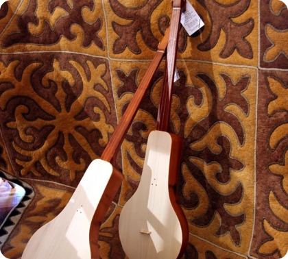

Нематериальное наследие кыргызов — это живой дух
народа, отражённый в песнях, эпосах и древних
ремёслах. Это наследие, словно ветер гор, невидимо, но
ощутимо в каждом звуке комузовых струн, в каждом
узоре войлочного ковра и в каждом слове эпоса "Манас".
Оно связывает поколения, наполняя сердца гордостью
за культуру и вдохновляя на её сохранение.
народа, отражённый в песнях, эпосах и древних
ремёслах. Это наследие, словно ветер гор, невидимо, но
ощутимо в каждом звуке комузовых струн, в каждом
узоре войлочного ковра и в каждом слове эпоса "Манас".
Оно связывает поколения, наполняя сердца гордостью
за культуру и вдохновляя на её сохранение.

Юрта

Шырдак

Комуз

Кок - бору

Эпос “Манас”

Айтыш